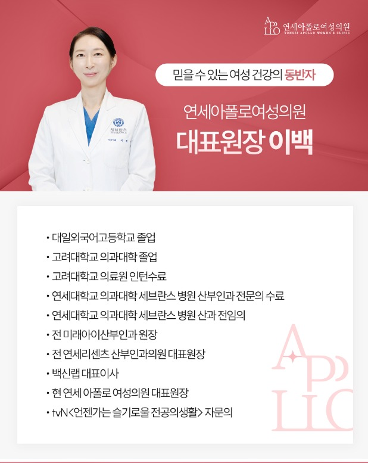

Director
대표원장 이백
산부인과 전문의 · 연세아폴로여성의원
“믿을 수 있는 여성 건강의 동반자”가 되고자 합니다. 고려대학교 의과대학을 졸업하고 연세대학교 세브란스병원에서 산부인과 전문의 과정과 산과 전임의 과정을 거쳤으며, 환자 한 분 한 분의 이야기에 귀 기울이는 진료를 지향합니다.
Career
약력
- 대일외국어고등학교 졸업
- 고려대학교 의과대학 졸업
- 고려대학교 의료원 인턴 수료
- 연세대학교 의과대학 세브란스병원 산부인과 전문의 수료
- 연세대학교 의과대학 세브란스병원 산과 전임의
- 전 미래아이산부인과 원장
- 전 연세리센츠 산부인과의원 대표원장
- 백신랩 대표이사
- tvN <언젠가는 슬기로울 전공의생활> 자문의
- 현 연세아폴로여성의원 대표원장